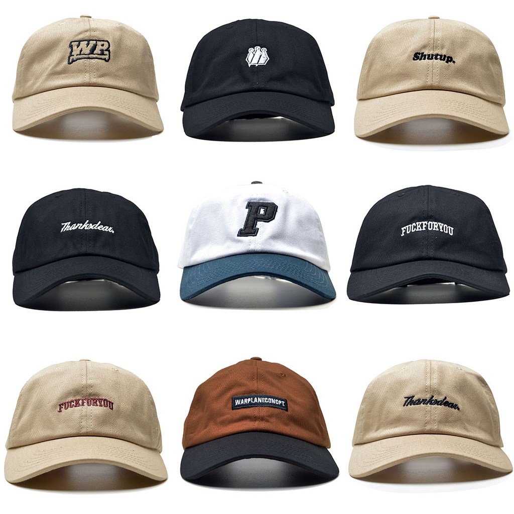
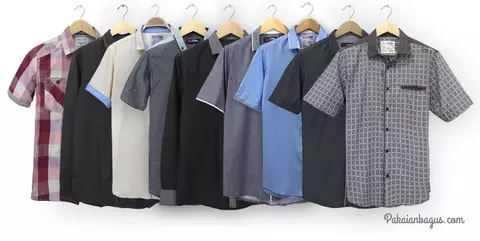
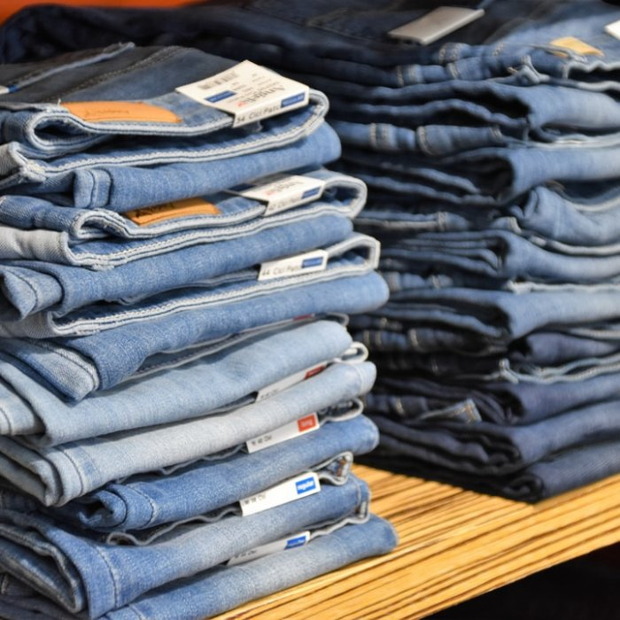

Clothes
Banyak pilihan kemeja untuk semua umur dan semua gender yang menarik dari segi desain tidak hanya itu untuk kemeja ada diskon 10%.

Banyak pilihan kemeja untuk semua umur dan semua gender yang menarik dari segi desain tidak hanya itu untuk kemeja ada diskon 10%.